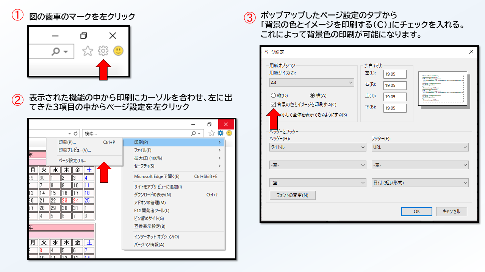
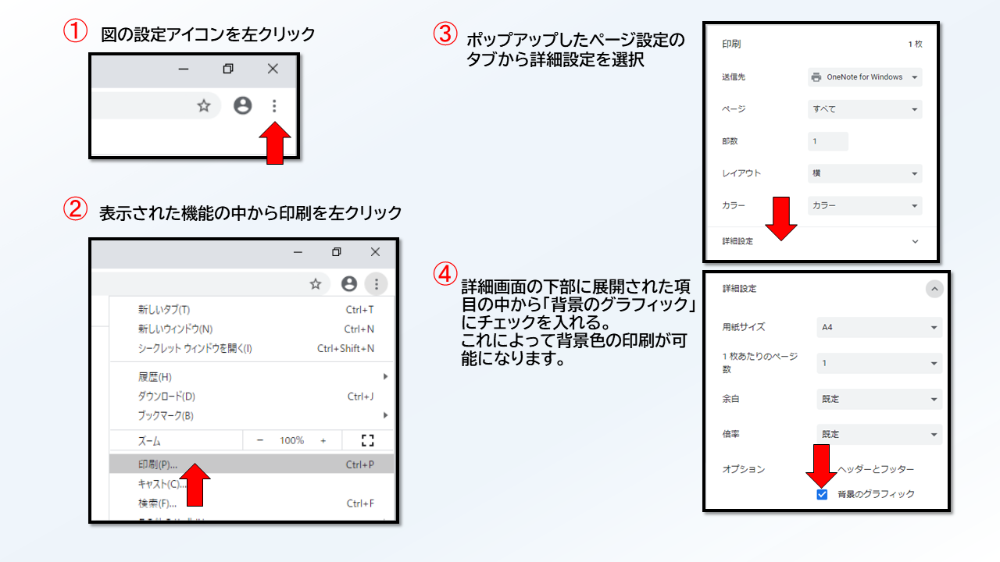

年数を入力してください
表示形式
4月始め
1月始め
※カレンダーを印刷する際は、Internet Explorer11もしくはGoogle Chromeをご利用ください。
また、出力する前に下記の画像をクリックして、背景色を反映する手順をご確認してからご利用ください
Internet Explorer11をご利用の場合は下記の画像をクリック

Google Chromeをご利用の場合は下記の画像をクリック
